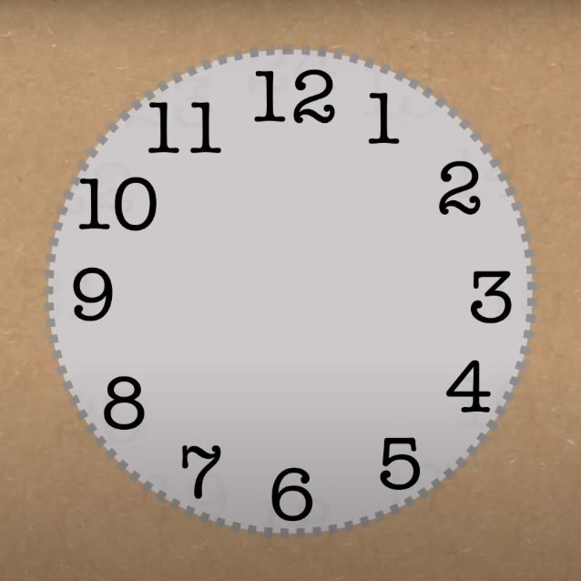
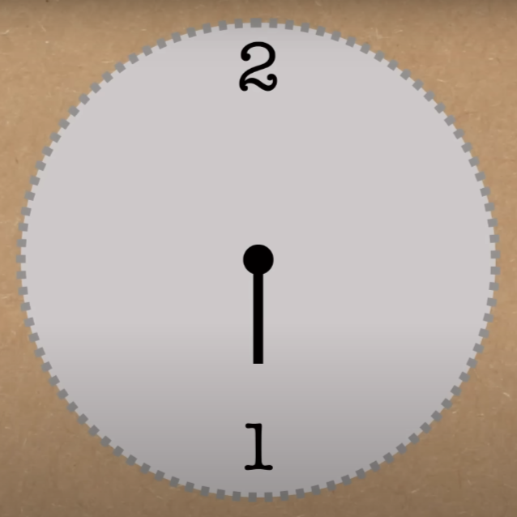
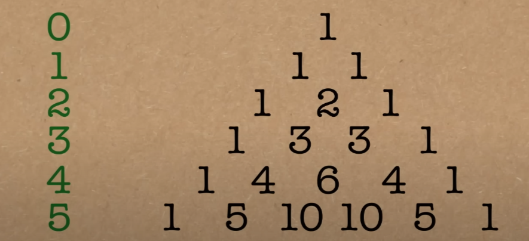

layout: true background-image: url(nebo2.jpg) --- class: center, middle # Brucove sanje Povzeto po [YouTube posnetku s kanala Numberphile](https://youtu.be/vW5qLFDsZ30?si=lFYNtrqkqsvmBkeT) --- #Uvod Brucovove sanje imenujemo napačno enačbo, ki se pogosto pojavi pri učencih matematike $$ (a + b) ^ 2 = a ^ 2 + b ^ 2 $$ -- count:false Zgornja enačba očitno ne drži, kar lahko vidimo že na enostavnem zgledu $$ (1 + 1)^2 = 4 \neq 1^2 + 1^2 = 2 $$ -- count:false Pravilna enačba za kvadrat dvočlenika se glasi $$ (a + b) ^ 2 = a ^ 2 + 2ab + b ^ 2 $$ Razmislimo, kdaj pa bi Brucove sanje delovale. --- # Kdaj bi brucove sanje delovale? Težave nam povzroča mešani člen $2ab$. Brucove sanje bi veljale, če bi mešani člen odpadel. Denimo, da živimo v svetu, kjer velja $$ 0 = 2 $$ V tem primeru bi veljalo $$ a ^ 2 + 2ab + b ^ 2 = a ^ 2 + 0ab + b ^ 2 = a ^ 2 + b ^ 2 $$ -- count:false Poglejmo si, ali tak matematični svet res obstaja. --- layout: false name: aritmetika-ure background-image: url(nebo2.jpg) # Aritmetika ure --- template: aritmetika-ure Pri razumevanju delovanja običajne 12-urne ure upoštevamo, da sta dve uri enaki, če se med seboj razlikujeta za 12 ur (npr. ura je 3 = ura je 15) .center[] <i>Primer:</i> Če prvič na uro pogledamo, ko kaže 12, in naslednjič pogledamo čez 50 ur (torej $4 \cdot 12 + 2$), ura kaže 2. Vrednost ure se je torej povečala za 2 in ne za 50. --- template: aritmetika-ure Zamislimo si torej uro, ki namesto 12-ih ur kaže le 2. Imenujmo jo 2-ura. .center[] V tem primeru, bodo 1, 3, 5, -1, -3 ... enake ure in 2, 4, 6, 0, -2 ... enake ure. Imamo torej le dve možni uri: liha ura in soda ura. --- template: aritmetika-ure V aritmetiki 2-ure, ki jo matematično imenujemo aritmetika $mod2$, res velja $2 = 0$. Našli smo svet, v katerem veljajo brucove sanje. <i>Primer:</i> $$ (5 + 4)^2 = 9^2 = 81 = 1 $$ $$ 5^2 + 4^2 = 25 + 16 = 1 + 0 = 1 $$ --- template: aritmetika-ure V aritmetiki 2-ure, ki jo matematično imenujemo aritmetika $mod2$, res velja $2 = 0$. Našli smo svet, v katerem veljajo brucove sanje. <i>Primer:</i> $$ (5 + 4)^2 = 9^2 = 81 = 1 $$ $$ 5^2 + 4^2 = 25 + 16 = 1 + 0 = 1 $$ Podobno v svetu aritmetike $mod2$ velja $$ \sqrt a + \sqrt b = \sqrt{a + b} $$ Poglejmo si na primeru: $$ \sqrt 3 + \sqrt 7 = \sqrt 1 + \sqrt 1 = 1 + 1 = 2 = 0 $$ $$ \sqrt{3 + 7} = \sqrt{10} = \sqrt 0 = 0 $$ --- background-image: url(nebo2.jpg) #Posplošitev Brucovih sanj Brucove sanje imenujemo tudi naslednjo splošno enačbo: $$ (a + b) ^ n = a ^ n + b ^ n $$ Pravilno enačbo za potenciranje dvočlenika imenujemo binomski izrek: $$ (a + b) ^ n = \sum_{k=0}^{n} \binom{n}{k} x^{n - k} y ^ k \binom{n}{k} = \frac{n!}{k! \cdot (n - k)!} $$ Ali lahko tudi za poljubno naravno število n najdemo svet, v katerem veljajo Brucove sanje? -- Izkaže se, da Brucove sanje veljajo v aritmetikah praštevilskih ur, torej 2-ure, 3-ure, 5-ure, ... --- background-image: url(nebo2.jpg) #Pascalov trikotnik in Fermatov mali izrek Poglejmo si Pascalov trikotnik, v katerem so zapisani koeficienti, ki nastopijo pri potenciranju dvočlenika. .center[] Opazimo, da so koeficineti v praštevilskih vrsticah ravno večkratniki praštevil, torej v aritmetiki svoje praštevilske ure postanejo 0. To je posledica Fermatovega malega izreka, ki se glasi: <i>Za poljubno praštevilo p in naravno število a velja:</i> $$ a^p \equiv a \mod p $$ .center[<i>p-ta potenca števila a je enaka številu a v aritmetiki p-ure</i>] --- layout: false name: zgled background-image: url(nebo2.jpg) #Zgled Poglejmo si Brucove sanje za kub vsote. $$ (a + b)^3 = a^3 + b^3 $$ Za poljubni števili se prepričajte, da v splošnem zgornja enačba ne drži. Število 3 je praštevilo, torej v aritemtiki 3-ure zgornja enačba drži. Prepričajte se sami na preprostem primeru: $$ (1 + 1)^3 = 1^3 + 1^3 $$ --- template: zgled <i>Rešitev:</i> $$ (1 + 1)^3 = (2)^3 = 8 = 2 $$ $$ 1^3 + 1^3 = 1 + 1 = 2 $$ Bralec lahko Brucove sanje preizkusi še na drugih aritmetikah praštevilskih ur, enačbi pa naj se pri urah matematike raje izogne.